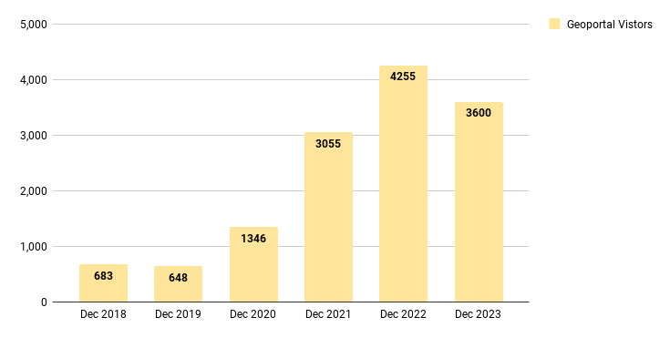

December 2023 Program Status Update¶
Monthly Highlight: Our Program Website Has a New Home!¶
We migrated of our program website from Google Sites to a static site hosted on GitHub. This move brings several key benefits:
 Enhanced Accessibility & Stability: Our content is now more accessible, presented in user-friendly HTML, authored in versatile Markdown, moving beyond the restrictions of Google Docs and Slides.
Enhanced Accessibility & Stability: Our content is now more accessible, presented in user-friendly HTML, authored in versatile Markdown, moving beyond the restrictions of Google Docs and Slides.
Future-Proofing: With Markdown and HTML's universal compatibility, we're poised for easy transitions to new templates or platforms. We have transitioned to a custom BTAA subdomain, stepping away from the UMN-branded Google Site address, which will ensure persistent links.
 Creative Control: We now have greater flexibility in site design, leveraging custom CSS and Javascript, a feature limited in Google Sites.
Creative Control: We now have greater flexibility in site design, leveraging custom CSS and Javascript, a feature limited in Google Sites.
Program Activities¶
Committees¶
See the updated Committees page for new mission statements.
- Completed mission statement and charter
- Reviewed status of international Humanitarian Data Exchange portal
- Worked on harmful language statement and identified the need to update our policies for accessibility, privacy, and usage.
- Devoted December meeting to discussing the BTAA Conference
- Strongly considering moving the conference to early spring
- Identified potential communication responsibilities for new hire, including maintaining contact management databases, email lists, and helping to organize future conferences.
- Developing a survey to identify research priorities as BTAA institutions
- Reviewed the Journal of Geography and Map Libraries call for proposals related to geoportals and archiving
Kickoff meeting planned for January 17, 2024
Workgroups¶
We issued a charter for the Geodata Pilot Collection Workgroup and currently have 5 members. The group will begin meeting in January 2024.
Program Management¶
- Northwestern University joined the BTAA-GIN and will begin attending meetings in January
- Our newest Team Member, Rob Shepard, returned to the program after accepting a position at the University of Chicago. Rob will serve on the Community Engagement Committee
- Our graduate student Research Assistant registered for an independent study course to research, create, and document OpenIndexMaps for the BTAA Geoportal.
BTAA Geoportal¶
Analytics Statistics¶
December 2023 by the numbers
- Visitors: 3,600
- Visits: 4,111
- Downloads: 339
- Visits with download: 8.25%
- Outlinks: 805
- Visits with outlink: 19.58%
- Num. searches: 907
- Search keywords: 312
- Pageviews: 10,984
Unique visitors by month 
More stats
See full statistics on our Analytics Dashboard
Collections¶
Total records as of December 31, 2023: 67,695
December Harvesting Activities¶
Development¶
We focused on workflow improvements in December to enable the following tasks:
- Find and share a persistent link to items by their batch import or update ID
- Use a facet to select items by last accessioned date to identify records that need to be retired
More development details
Read the full December Development Tasks report for more details.
Next Steps¶
The next steps on our program roadmap include the following tasks:
- Governance: Develop a priority projects matrix
- Public documentation: Teach the Team Members how to write in Markdown and contribute to our new website.
- Asset management: Create a Technology Roadmap that includes Geoportal maintenance as well as the new features required by our Geodata Collection Strategic Plan.